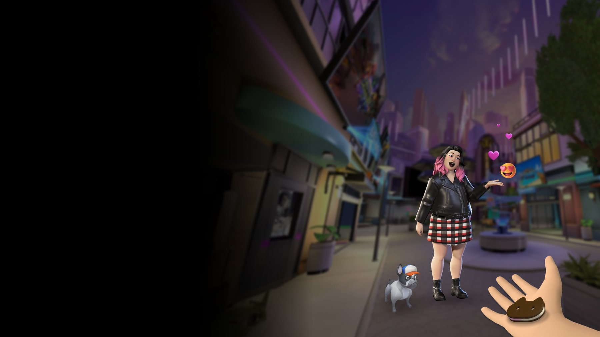
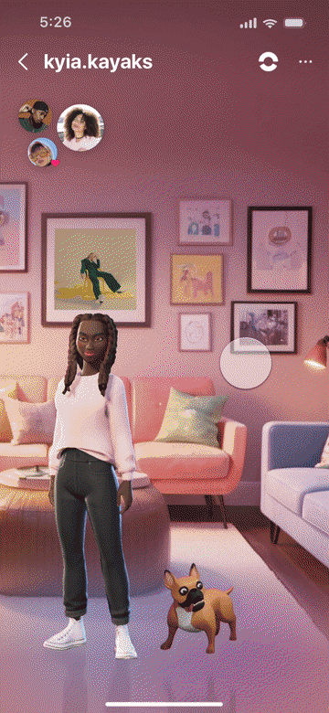
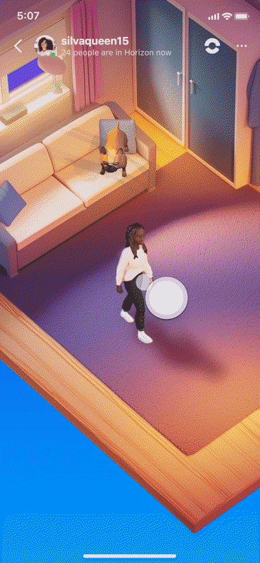
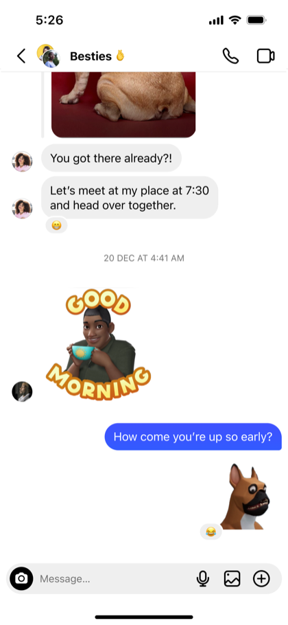
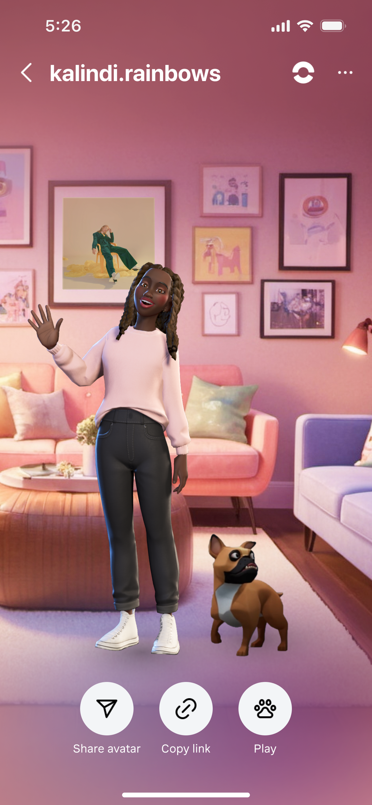
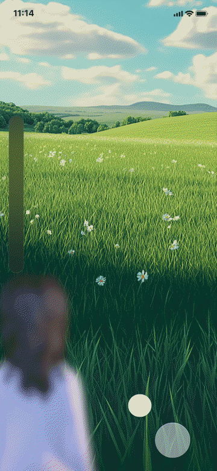

Instagram x Metaverse Big Bets
I created a strategy for introducing the metaverse to Instagram, aligned two organizations around it, and influenced long-term investment.
My Leadership & Influence
- Created the 0→1 strategy for bringing the metaverse to Instagram
- Aligned Instagram and Reality Labs around a shared, fundable investment
- Reframed Pets as a low-risk bridge — turning vision into a long-term roadmap
Key Results
The Metaverse Audience Is on Mobile
Making the metaverse mainstream required reaching millions of Instagram users on mobile, even though the broader vision was centered on VR experiences.
Metaverse ≠ Mobile
Existing metaverse products required VR hardware — excluding the mobile-first teen audience that drives Instagram engagement.

Expression Gap
Teens wanted more playful, low-pressure ways to connect beyond photos and text — but Instagram lacked the interactive, identity-driven features they craved.

Identity Mismatch
Avatars felt disconnected from Instagram's identity as a platform built on authentic self-expression — and without a clear narrative, leadership hesitated to give them visibility.

Meet Teens Where They Are
I structured the strategy in two phases — start with lightweight social features teens already understand on Instagram, then use that foundation to draw them into richer virtual spaces over time.
- Magical portal
- Personalized virtual space
- Avatar-to-avatar hangouts
- Deeper customization
- Avatar sticker rewards
- Low pressure connection on Notes
- Companion virtual pets
- Instant games & rewards
Drag to explore
This framing was key to earning leadership support — it turned an abstract metaverse bet into a concrete, low-risk product strategy.
Leading the Vision Sprint
I structured the sprint in 3 phases: diverge on opportunity spaces, converge on promising directions, then pressure-test against teen behaviors and Instagram's existing surfaces. Each week, I led a crit to kill weak concepts and double down on strong ones.


Vision sprint artifacts — from opportunity mapping to concept explorations with the design team.
A Breadth of Ideas
I led the team to explore 6 concepts across expression, companionship, and identity — each prototyped as a working mockup to test how it would feel inside Instagram's real surfaces.
Avatar Greenscreen
Teens use their avatars as expressive stand-ins — reacting to content and sharing personality without showing their face.
My "Vibe"
Personal spaces where teens curate their personality — friends can visit and discover each other's vibe.
Virtual Pets
Virtual companions that live on your profile, react in DMs, and travel with you to Horizon's Pets Park — a bridge between Instagram and the metaverse.

Mini Games
Mini-games like fetch create daily engagement loops — a reason to come back and connect with friends.
Avatar Dance
Avatars perform playful dances and emotes — a low-pressure, expressive way for teens to react and share personality in motion.
Magical Portal
A portal on Instagram that transports teens to an immersive virtual space — turning an everyday tap into the first step toward the metaverse.


Why Instagram Pets Won
By positioning Instagram Pets as a low-friction, “cringe-free” way for friends to connect, I aligned Instagram and Reality Labs leadership around a shared investment that secured funding. With existing 3D assets and Horizon Pets Park already in development, it was a low-risk path to validate the metaverse.
Self Exploratory
Teens customize and nurture a virtual companion that reflects their personality — encouraging identity exploration through pet styles, accessories, and behaviors.
Creative Outlet
Pet accessories, avatar pairings, and shareable moments give teens a canvas for self-expression — without the pressure of posting photos of themselves.
Feels at Home in IG
Instagram Pets live across existing surfaces — Notes, DMs, profiles — making the feature feel native to Instagram rather than a foreign metaverse import.
| Concept | Self Exploratory | Creative Outlet | Feel at Home | Bridges to Metaverse |
|---|---|---|---|---|
| Avatar Greenscreen | ◒ | ● | ● | ○ |
| My "Vibe" | ● | ● | ◒ | ● |
| Instagram Pets | ● | ● | ● | ● |
| Mini Games | ○ | ◒ | ○ | ● |
| Avatar Dance | ○ | ● | ● | ○ |
| Magical Portal | ○ | ◒ | ○ | ● |
● Strong ◒ Partial ○ Weak — Instagram Pets was the only concept that scored strong across all criteria.
Aligning on Investment Strategies
I framed Pets as a gateway to the metaverse and laid out a range of investment options — from lightweight interactions that learn fast to fully immersive experiences synced with Horizon Pets Park in VR.
Drive Traffic to Horizon
- Hard upsell to the metaverse
- No native pet ownership on Instagram
- Immediate referral to Horizon
Adopt, Play, and Share on Instagram
- Soft upsell to the metaverse
- Adopt and own a pet on IG
- Tamagotchi-like engagement loops
- Progression-driven referrals to Horizon
Seamless Cross-World Experience
- Persistent pet identity
- Shared state between IG and VR
- Seamless travel to Pets Park
- Foundation for the metaverse ecosystem
Pets as the Bridge to the Metaverse
I designed Pets to feel native to Instagram — living across Notes, DMs, and profiles — with lightweight ways for teens to express themselves and connect with friends. A companion pet could then carry forward into Horizon's Pets Park, bridging Instagram to the metaverse.
Express mood

Host friends

React with stickers

Show your pet

Play fetch
Visuals recreated to respect Meta confidentiality.
From Vision Sprint to Strategic Foundation
What started as a vision exercise became a strategic proof point. In smoke tests across Australia, New Zealand, and Malaysia — and a beta in Mexico — Instagram Pets became the most efficient lever for bridging users into Horizon Pets Park, validating demand and aligning Instagram and Reality Labs around a shared Bridge to Metaverse roadmap.
Instagram users can bring their pets to Horizon Pets Park — What users play ↗
How This Changed My Thinking
Adoption Through Familiar Behaviors
Adoption doesn’t come from exposing people to new technology—it comes from embedding it into familiar behaviors. Rather than ask users to enter the metaverse, we brought it to where they already were: Instagram.
The Power of Reframing
Product strategy is often about creating alignment before creating interfaces. Reframing avatars and positioning Pets as a low-friction social experience aligned Instagram and Reality Labs around a shared investment that made the vision possible.